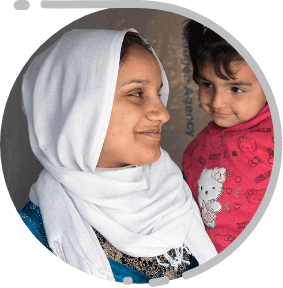
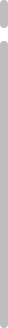

une extrême solidarité avec les personnes persécutées, discriminées, privées de leurs
droits.
Aujourd’hui, face à l’inhumanité des politiques européennes, au recul des droits et à la
montée
de courants nationalistes et xénophobes, l’heure est toujours à la résistance.
Montrez-vous extrêmement solidaires des personnes migrantes et réfugiées,
Geneviève Jacques
Offrir un avenir à ses enfants, grâce à La Cimade

+
madeleine barot 1940 : avec les personnes internées dans les camps
+
Patrick Marsauche Sauver des dizaines de vies
+
Geneviève Jacques
Bénévole aux Batignolles – permanence juridique
–
Ancienne Présidente de La Cimade
Ancienne Secrétaire Générale de La Cimade

extrêmement solidaire
des personnes qui doivent tout reconstruire
Dans le taxi qui m’amenait vers un studio de télévision nous avons entamé la conversation, le
chauffeur et moi. Il m’a demandé si je travaillais pour la télé et je lui ai répondu que j’étais
invitée à un débat sur les questions migratoires parce que j’appartenais à une association de
solidarité avec les personnes étrangères.
Il s’est alors retourné vers moi et m’a dit : ce ne
serait pas la Cimade par hasard ?
Aussi surprise que ravie, je lui confirme et lui demande
comment il a pensé ça ?
Mais parce que, si je suis ici
aujourd’hui, c’est grâce à la Cimade ! » me répond t-il
en riant.
Son père a dû quitter le Sénégal pour venir chercher en France un emploi lui permettant d’offrir
un avenir à ses enfants. Après des années de travail difficile, sans droits ni protection, il
est parvenu, avec le soutien de La Cimade, à régulariser sa situation et à obtenir un titre de
séjour. Quand il a entrepris les démarches pour faire venir sa famille, c’est encore la Cimade
qui l’a accompagné pour surmonter les innombrables obstacles bureaucratiques.
Voilà c’est avec l’aide de La Cimade, que je suis arrivé en France, que j’ai suivi l’école et
que je suis heureux de vivre dans ce pays qui est devenu aussi le mien ». Mais, a-t-il ajouté, «
je suis triste de voir comment sont traités aujourd’hui tous ces migrants qui doivent dormir
sous des tentes ou dans la rue.
Ce témoignage nous redonne encore plus de courage et de conviction pour continuer d’accompagner
des personnes étrangères et de plaider sans relâche pour des politiques publiques qui favorisent
l’accueil et l’intégration plutôt que le rejet et le soupçon.
+
madeleine barot Secrétaire générale de La Cimade de 1940 à
1956
extrêmement solidaire
avec les personnes internées dans les camps
je suis devenue secrétaire générale de La Cimade et j’ai réussi à entrer et à rester dans le
plus grand camp d’internement : le camp de Gurs, bâti en 1938 pour les réfugiés de la guerre
d’Espagne. Il y avait aussi le camp de Rivesaltes : des Juifs y étaient internés dans des
conditions inadmissibles. La Cimade y a installé une équipe de résidents permanents pour aider
ces personnes internées. Nous avons aussi joué un rôle majeur de témoins en alertant notamment
sur les arrestations auxquelles les autorités allemandes procédaient à l’intérieur des camps
afin d’emmener vers l’Allemagne des réfugiés qui étaient en zone libre et sous protection
française.
C’est en vivant dans les camps
avec les victimes que les
équipes de La Cimade ont pu aider à sauver des vies, légalement ou clandestinement.
C’est par exemple dans un cimetière situé sur la frontière entre la France et la Suisse que j’ai
aidé des enfants à fuir. Il fallait qu’ils soient vêtus de noir et qu’ils aient des fleurs dans
les bras. On allait s’installer près de la tombe d’une vieille dame dont je leur racontais
l’histoire. Quand les soldats allemands qui surveillaient la frontière ne pouvaient pas nous
voir on aidait un enfant à franchir le mur du cimetière. De l’autre côté c’était la Suisse, il
était en sécurité.
+
Patrick Marsauche Président de La Cimade, Gap,
Hautes-Alpes
extrêmement solidaire
avec les personnes qui sont en péril
C’est vrai qu’on est dans une situation moins dramatique qu’aux débuts de La Cimade. Mais
aujourd’hui comme hier, on cherche à sauver des êtres humains. Aujourd’hui, dans les
Hautes-Alpes, on sauve des gens qui courent de véritables risques.
Des maraudes sont organisées tout l’hiver à ski de fond, de randonnée, pour aller dans la
montagne et voir s’il y a des gens qui sont en train de mourir de froid.
On a sauvé des dizaines et des dizaines de personnes depuis deux ans.
Alors oui, on peut faire le parallèle avec ce qui se passait il y a 80 ans, même si les
conditions seront moins dramatiques. La police est à nos trousses en permanence et chaque fois
qu’elle le peut, elle porte plainte auprès du procureur qui lui-même nous envoie au tribunal.
faites un don avant le 31 décembre pour le déduire de vos impôts
2019
Votre don à La Cimade est déductible de vos impôts à hauteur de 66% de son montant dans la
limite de 20%
de votre revenu imposable. Votre don de 150 € vous revient réellement à 51€. Pour
bénéficier de cet
avantage sur vos impôts 2019, il vous faut faire votre don avant le 31 décembre 2019.
Afin d'optimiser les frais de gestion des dons, La Cimade vous enverra un reçu fiscal unique et
annuel pour l'ensemble de vos dons, adressé par email en mars prochain.